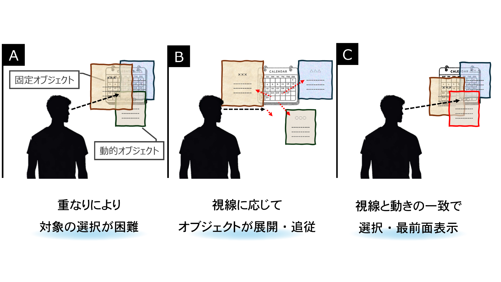
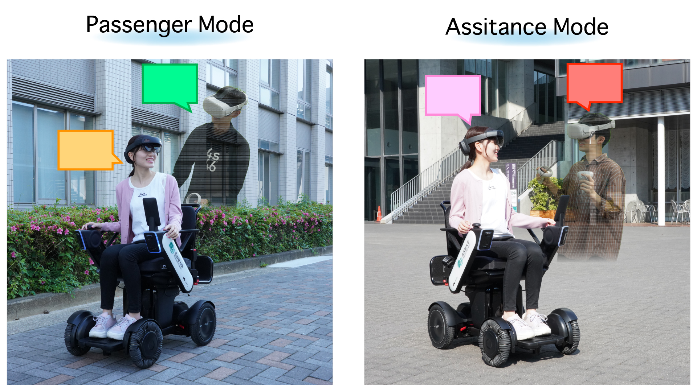
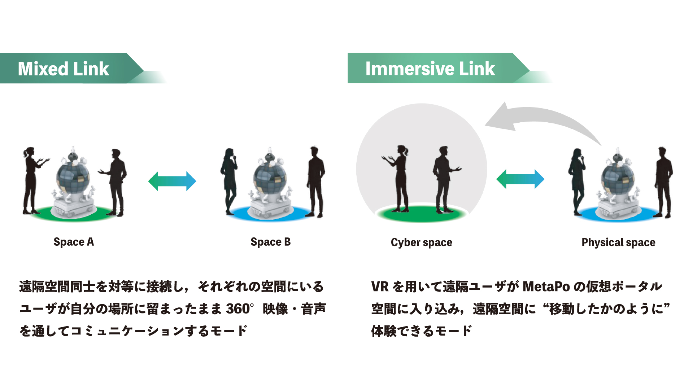

Research Topic 01
視線誘導による遮蔽オブジェクト選択手法

MR空間では、仮想ウィンドウなどの動的オブジェクトと現実世界の固定オブジェクトが重なり、ユーザの選択意図を正確に判断することが難しいという課題がある。特に遮蔽状態では、従来の視線操作では対象の特定が困難となる。本研究では、オブジェクトの動きと視線追跡を組み合わせた「Moving Pursuits」を提案し、視線による直感的かつハンズフリーな選択を実現する。動的オブジェクトを展開させることで視覚的干渉を解消し、視線の追従によって選択意図を推定することで、複雑なMR環境における選択精度と操作性の向上を目指す。
Research Topic 02
モビリティを介した異空間コミュニケーション

近年，オンラインやメタバースの普及により遠隔コミュニケーションは拡大している一方で，車椅子における介助者との対話のような「身体的な位置関係に基づくコミュニケーション」は失われつつある。本研究では，物理空間とサイバー空間をモビリティ（電動車椅子）を介して接続する「Mobility Link XR」を提案する。360度映像とアバターを用いて空間を共有し，介助関係や同席関係といった位置関係を再現することで，単なる映像通信では得られない臨場感や対話の質の向上を目指す。
Research Topic 03
球体ディスプレイを用いた多拠点グループテレプレゼンス

遠隔コミュニケーションの発展により，複数拠点・多人数での同時接続が一般化しているが，従来のビデオ会議では拠点間の関係性や空間的な一体感が失われやすいという課題がある。特に多拠点環境では，情報の分断や注意の分散により，誰がどこにいるのか，どの拠点同士が関係しているのかが把握しづらい。本研究では，球体ディスプレイと360度映像を用いて複数拠点を一つの空間として統合するグループテレプレゼンス環境を提案する。さらに，逆パノラマ表現およびオーバーレイ表示を用いることで，拠点間の関係性や人物の存在を連続的に知覚できるよう設計し，多拠点コミュニケーションにおける空間的理解と相互作用の向上を目指す。
[SIGGRAPH2022 Poster] MetaPo: A Robotic Meta Portal for Interspace Communication